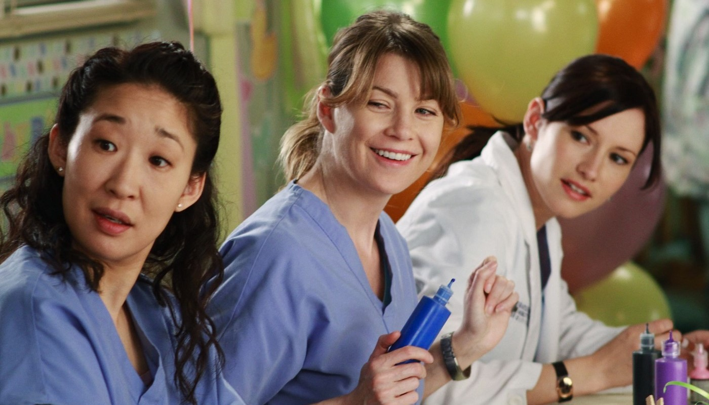
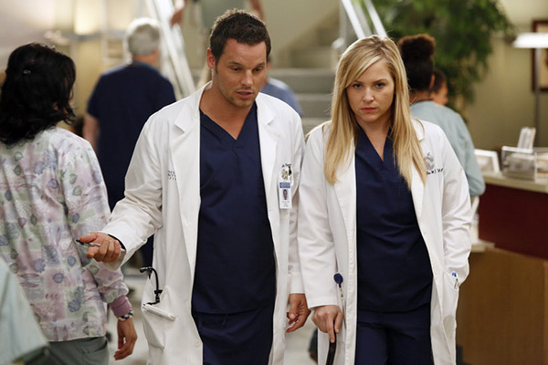

Grey's Anatomy (Anatomía según Grey) es una serie de televisión de drama médico estadounidense creada por Shonda Rhimes, la cual se estrenó el 27 de marzo de 2005. La serie se centra en la vida de los cirujanos internos, residentes y especialistas a medida de que se convierten en médicos cirujanos experimentados mientras tratan de equilibrar sus relaciones personales y profesionales. Aunque la serie está ambientada en la ciudad de Seattle, en el cual, se ubica el hospital ficticio Grey Sloan Memorial Hospital (anteriormente conocido como Seattle Grace y Seattle Grace Mercy West), se produce y filma principalmente en Los Ángeles, California.
Esta protagonizada por Ellen Pompeo como Meredith Grey, el personaje titular. El reparto original estaba conformado por nueve actores destacados: Sandra Oh como Cristina Yang, Justin Chambers como Alex Karev, T. R. Knight como George O’malley, Chandra Wilson como Miranda Bailey, James Pickens Jr. como Dr. Webber, Patrick Dempsey como Derek Shepherd, Jessica Capshaw como Arizona Robbins, Eric Dane como Mark Sloan, Sara Ramirez como Callie Torres.
 La serie sigue a Meredith Grey, la hija de una cirujana general de renombre llamada Ellis Grey, luego de ser aceptada en el programa de residencia en Seattle Grace Hospital. Durante su tiempo como residente, Grey trabaja junto con las doctoras Cristina Yang, Izzie Stevens, Alex Karev y George O'Malley, quienes luchan por equilibrar sus vidas personales con el trabajo agitado y los horarios de entrenamiento. Ellos son supervisados durante su internado por Miranda Bailey, una residente de alto rango que trabaja para asistir a Derek Shepherd, el jefe de neurocirugía y el interés amoroso de Meredith; Mark Sloan jefe de cirugía plástica y Richard Webber, el Jefe de Cirugía y cirujano general adjunto, y amante de Ellis Grey décadas atrás. En la sexta temporada, a estos residentes se les unen Jackson Avery y April Kepner, ex residentes de Mercy-West que se unen a Seattle Grace después de una fusión administrativa. el ala quirúrgica está supervisada principalmente por Callie Torres de ortopedia; Arizona Robbins, como directora de cirugía pediátrica, luego como directora de cardio; Teddy Altman y Amelia Shepherd, la hermana de Derek, quien es contratada para reemplazarlo como jefe de neurocirugía.